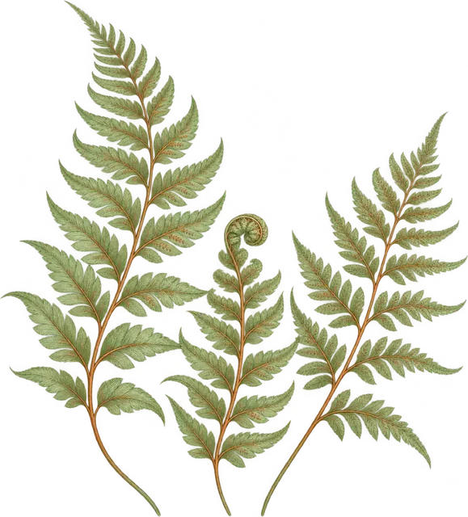
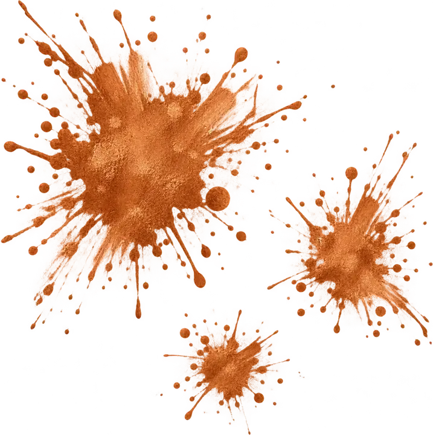

El estilo
Todo lo que conviene saber
El realismo busca reproducir con fidelidad un rostro, un objeto o una escena, y el black & grey lo consigue con degradados de negro diluido que dan volumen y profundidad. Es un estilo exigente que premia la planificación.
Guille Martink dibuja cada proyecto a lápiz antes de tatuarlo y trabaja piernas, espaldas y mangas completas, retratos y escenas con simbolismo. También se atreve con el color cuando la pieza lo pide.

Qué lo define
Realismo y black & grey en detalle
01
Degradados
Transiciones suaves entre luces y sombras que construyen el volumen.
02
Detalle
Texturas, miradas y expresión trabajadas con precisión.
03
Referencia
Parte de una fotografía o boceto aprobado antes de tatuar.
04
Piezas grandes
Brillan en tamaños medianos y grandes y en proyectos por sesiones.
Ideal para
Cuándo encaja
- Retratos. Personas, mascotas o figuras que significan algo para ti.
- Mangas, piernas y espaldas. Composiciones completas planificadas por fases.
- Motivos religiosos y escenas. Imágenes con carga simbólica y mucho contraste.
¿Cuántas sesiones lleva un retrato?
¿Qué foto necesito para un retrato?
¿Puede combinarse con color?

En movimiento
El trabajo de Guille, en vídeo
Un reel reciente de su perfil de Instagram. Pulsa play y míralo sin salir de la web.
@guillemartinkQuién lo hace
Guille Martink
Realismo · Black & grey · Graffiti
Realismo en blanco y negro con volumen, retratos y piezas completas. También dibuja y pinta graffiti.
Galería
Trabajos de realismo y black & grey
Sigue explorando
Más estilos

Neotradicional y neojaponés
Color saturado, línea firme y motivos con mucha presencia.
Ver más
Anime y personajes
Personajes de anime, cine y animación con mucho color.
Ver más
Blackwork y dotwork
Mandalas, geometría, negro sólido y puntillismo.
Ver más
Fine line
Línea fina, flores, símbolos y piezas delicadas.
Ver más


Pide tu cita
Pide tu cita
Cuéntanos tu idea, la zona del cuerpo y el tamaño aproximado. Con una foto de referencia, mejor.